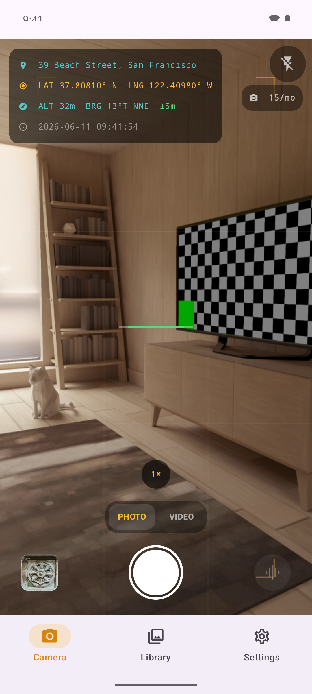

GPS Photo & Video Stamp Camera - iPhone & Android
Say it. Stamp it. Done.
Shoot a photo or record a video, speak your notes, and Stampr burns GPS coordinates, timestamps, and your transcribed voice notes right into the footage. No typing. No forgetting. Just talk and shoot.
 iPhone
iPhone

Android